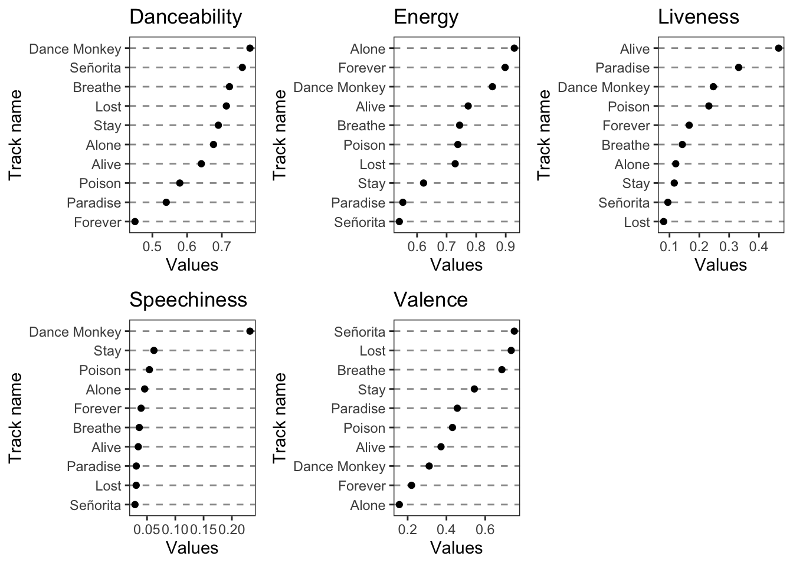
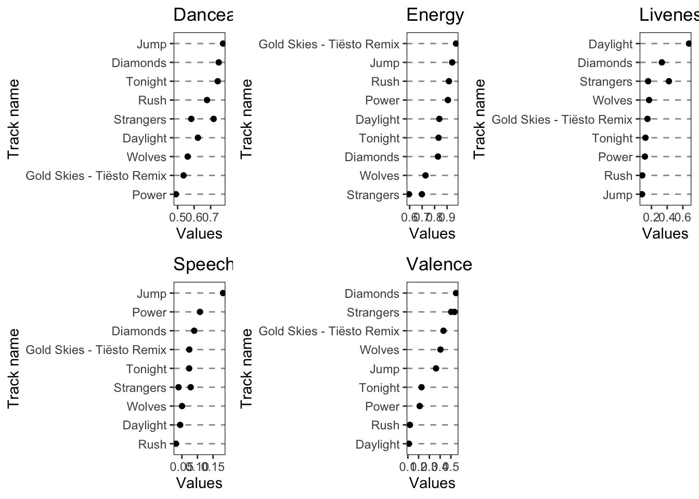

Chapter 10 Distribution of most listened artist based on minutes listened

This graph shows us the most listened artist in the spotify dataset. Since, we had more than a thousand artists, filtering the data by duration helped us segregate the artists whose songs were heard for more than hours. The histogram is used to compare the popularity amongst artists. Matrin Garrix that was popular both in pop and edm genre and hence is played for the longest duration by its neighbors.
Using such data, spotify can work on its marketing strategy to check on ways of improving recognition almongst the less prominent artists. This can be done by showing more advertisements or song suggestions of the lesser popular singers so that listerners listen to them. Such stategy will make listeners spend more time on the spotify platform and can potentially increase their revenue.
